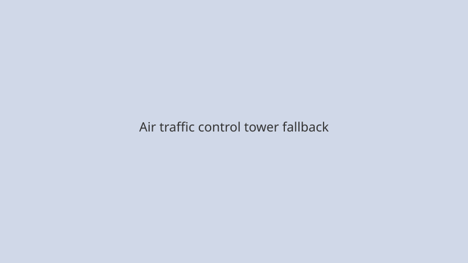

United States · Aviation · 14 November 2026
FAA lifts nationwide ground stop after air-traffic communications overload

What is agreed across desks
On Friday 13 November 2026 the Federal Aviation Administration issued a nationwide ground stop for departing flights after telecommunications systems supporting air route traffic control centers experienced failures. Transportation Secretary Sean Duffy stated that legacy analog telecom equipment, including old routers and switches, became overloaded with data beginning around 3:36 p.m. Eastern Time. The ground stop was ordered at approximately 3:54 p.m. ET and lifted at 8:15 p.m. ET. Homeland Security Secretary Markwayne Mullin said there was no indication of a cyberattack or intentional interference and that aircraft already airborne continued to their destinations or diverted safely. Flight tracking services recorded thousands of cancellations and delays. Recovery of airline schedules is expected to continue through the weekend.
What is only a quote
Duffy described the system as relying on 1980s-era copper lines and said significant modernization funding remains incomplete. He and Mullin emphasized that the incident was a technical failure of aging infrastructure rather than a security event. These characterizations come from official briefings; independent technical forensics have not yet been released.
Mechanism and history
U.S. air traffic control relies on a network of Air Route Traffic Control Centers that manage en-route traffic between airports. Communications and radar data feed these centers through specialized telecommunications networks. The FAA has long reported that portions of this infrastructure date to the 1970s and 1980s. A previous nationwide ground stop occurred in January 2023 after a different computer system failure. The current incident is the second since the post-9/11 period in which all domestic departures were halted. Officials have requested multi-billion-dollar modernization packages in recent budgets. The precise sequence of data overload, which routers failed first, and why the failure propagated nationwide remain under investigation.
What the story is not
This is not evidence of a cyberattack, terrorism, or deliberate sabotage. No official statement has attributed the outage to external actors. It is not a permanent shutdown of U.S. airspace; the ground stop was temporary and has been lifted. Passenger safety outcomes have not been reported as involving injuries from the technical failure itself.

Source articles and scores
| Outlet | Headline | T | N | C |
|---|---|---|---|---|
| Al Jazeera | FAA ground stop lifted: Why were US flights grounded, and what’s next? | 94 | 0 | 95 |
| BBC | What we know about the longest US nationwide flight ground stop since 9/11 | 95 | 0 | 98 |
| Fox News | FAA lifts nationwide ground stop of planes at US airports | 93 | +5 | 90 |